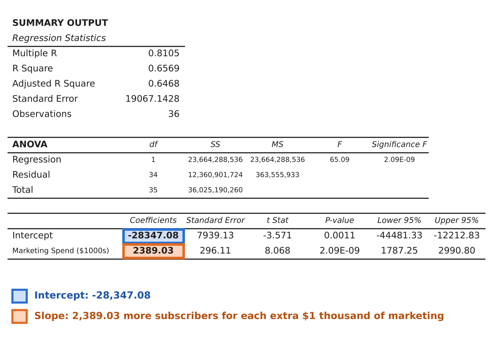
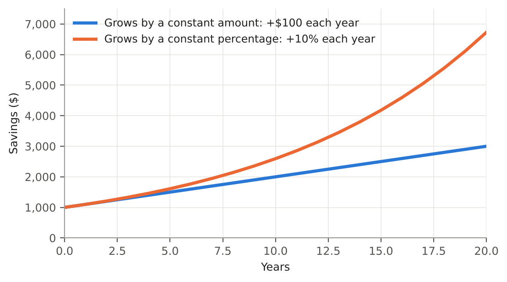
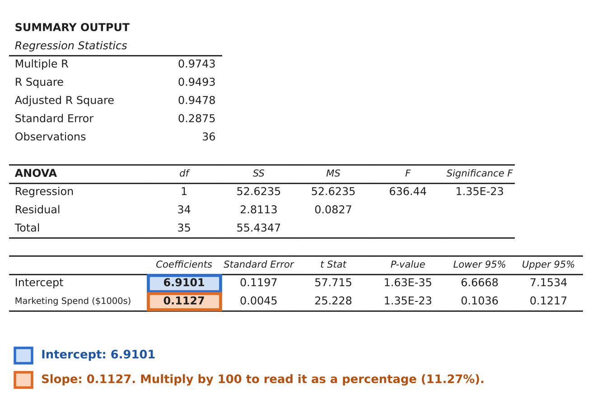
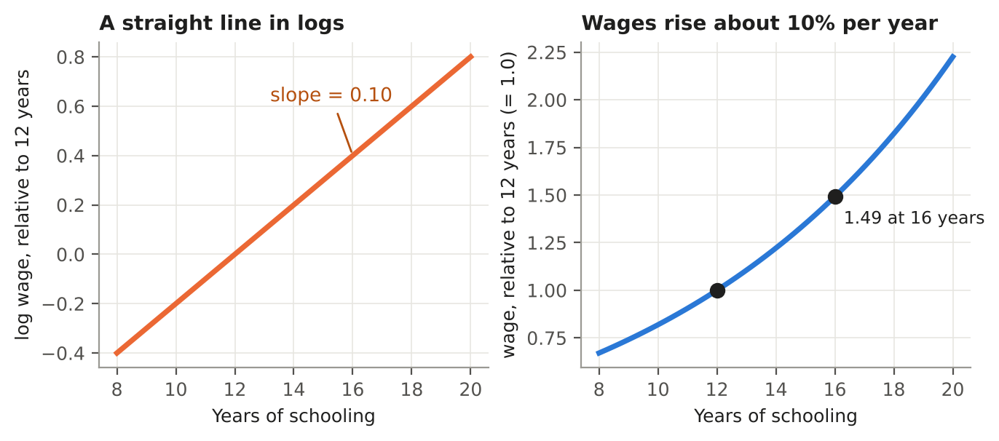
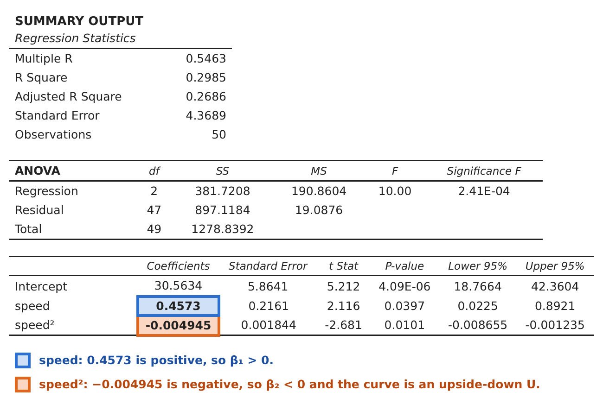
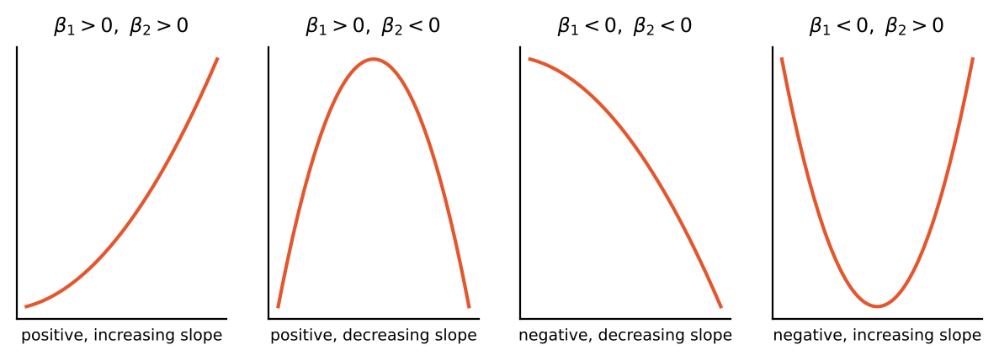

Chapter 2
Extending the Regression Model
Logs, multiple regression, adjusted R², and curves
Adapted from Holmes, A., Illowsky, B., Dean, S. (2023). Introductory Business Statistics 2e, Chapter 13. OpenStax. Licensed under CC BY 4.0. https://openstax.org/details/books/introductory-business-statistics-2e
Figures marked Interactive respond to you. Switch models, slide values, and add or remove variables, and watch the numbers change. Every figure also has a caption that says what to notice. Hover over (or tap) a term with a dotted underline to see its definition.
Introduction
Chapter 1 built a tool with three limits. It drew only a straight line. It used only one independent variable. And it measured the effect of x on y in the units of y, always as a constant amount. Real questions break all three rules. Marketing dollars rarely add the same number of new subscribers for every dollar spent. Instead, the number of subscribers can grow at an increasing rate as spending rises. Energy drink sales depend on price and on a dozen other things at once. Fuel efficiency rises with speed up to a point, then falls.
This chapter keeps the same machinery (least squares, residuals, t statistics, p-values) and stretches the model in three directions. The fixes are simple: transform a variable with the natural log, add more variables to the right-hand side, or add a squared term. Each one is still a linear regression in the coefficients, so Excel's regression tool handles all of them. The skill lies in knowing which one a picture of the data is asking for, and in reading the output correctly afterwards.
Chapter objectives
By the end of this chapter, you should be able to:
- Explain when a straight line does not fit growth data, and use the natural log of the dependent variable to fit it.
- Interpret a slope as a percentage when the dependent variable is in logs, and name the four unit/percentage cases (level-level, log-level, level-log, log-log).
- Run a regression with more than one independent variable in Excel, and interpret each slope "holding the other variables constant."
- Explain omitted variable bias, and say what a control variable is for.
- Explain why R² can never fall when a variable is added, and use adjusted R² to decide whether a variable is worth keeping.
- Add a squared term to capture curvature and find where the curve peaks or bottoms out.
2.1Log Transformations
A straight line is a good summary when each extra unit of x adds about the same amount to y. Many real outcomes do not behave that way. Customers, sales, and savings tend to grow by a percentage of what is already there, so the bigger they get, the bigger the jumps. A straight line fit to growth like that is the wrong shape. This section shows a simple fix: change the scale of y with the natural log before running the regression. It ends with a table of the four ways a log can enter a regression, and with elasticity, the economist's favorite use of logs.
When a straight line doesn't fit
Suppose you work for a streaming company, and you want to estimate the effect of marketing on new subscribers. The data set subscriber_growth records marketing spending (in thousands of dollars) and subscribers for 36 observations. Three questions come up right away:
- Estimate the relationship between marketing and subscribers.
- Is marketing statistically significant at α = .05?
- What is R² for this regression? How do you interpret it?
Start with the picture, as always. In Figure 2.1.1, subscribers barely move when marketing spending is small, then climb faster and faster as spending grows. That is a curve, not a straight line. Press the button to fit a straight line anyway. It runs above the points in the middle of the range and below the points at the right end, so it systematically misses the pattern. Let's see what the regression says before we fix it.

In the Excel output (Figure 2.1.2), the slope on Marketing Spend is 2,389.03, so the line says that as marketing increases by 1 thousand dollars, subscribers increase by 2,389, on average. The p-value for the slope, 2.09E-09, is far below .05, so marketing is statistically significant. R² is 0.6569, so about 66% of the variation in subscribers is explained by marketing spending. Those answers sound fine, but the picture says the straight-line model is the wrong shape. Notice also what the slope claims: every extra $1 thousand of marketing adds the same 2,389 subscribers, whether spending is 5 thousand or 35 thousand. The data say the payoff grows.
Constant percentage
Recall how we interpret the slope β₁: "As marketing increases by 1 thousand dollars, subscribers increase by 2,389." So the change is by a constant amount. What if instead the change was by a constant percentage? Think of how money in a savings account grows at a constant percentage.

In Figure 2.1.3, both accounts start with $1,000. The blue account gains $100 every year, which gives a straight line. The orange account gains 10% of whatever it holds: $100 in the first year, $110 in the second, $121 in the third, and so on. Each year's gain is larger because it is computed on a larger balance, and the result is a curve that bends upward. Growth by a constant percentage looks like the subscriber data, not like a straight line.
The natural log
The natural log, written ln, is the logarithm with base e ≈ 2.718. Transform the data with it when the data appear to be growing: it turns a curve that grows by a constant percentage into a straight line, so the regression can describe it. Three facts are enough for this course:
- ln can only be applied to positive numbers. You cannot take the log of 0 or of a negative number.
- ln turns multiplication into addition, so a fixed percentage change in y becomes a fixed difference in ln(y).
- The "ln" matters. The percentage interpretation works with the natural log, and not with log base 10 (Excel's =LOG()).
In Excel the function you want is spelled LN. The steps below create the ln column and run the regression on it.
The log-level regression
To fit the curved data, transform the dependent variable and regress ln(y) on x:
Figure 2.1.4 shows the same data after taking the natural log of subscribers. The curve has straightened out. The points now climb steadily from the lower left to the upper right, and when you press the button to draw the line of best fit, the line follows them closely from the smallest values of marketing to the largest. Now run the regression of ln(subscribers) on marketing. The Excel output is in Figure 2.1.5.

Example 2.1.1 reads the numbers in that output.
Interpreting the slope
When the dependent variable is ln(y), the second part of our interpretation is now in % terms. Take the coefficient and multiply by 100. Instead of "As marketing increases by 1 thousand dollars, subscribers increase by 2,389" we now say:
This is a different kind of statement, and it fits the data better. Going from 5 thousand to 6 thousand dollars of marketing and going from 35 thousand to 36 thousand dollars both raise subscribers by about 11.27%, but 11.27% of a larger number of subscribers is a larger gain. The percentage is constant, and the amount grows. That is what the curve in the original scatter plot was showing us.
Use Figure 2.1.6 to switch between the two models and compare their residual plots. The residual plots back this up. For the straight-line regression, the residuals run positive, then negative, then positive again, which is the U-shape from Section 1.5 that says the model has the wrong form. For the ln regression, the residuals scatter around zero with no pattern, which is what a well-specified model looks like.
Now compare what the two models predict at marketing = 20. The log model predicts in ln units first, then undoes the log with e:
The straight-line model predicts
for the same spending, roughly double. Drag the slider in Figure 2.1.7 to see where else the two models disagree. At the low end the straight line is worse than wrong. At marketing = 0 it predicts about −28,300 subscribers, which is impossible, while the log model predicts about 1,000. The log model can never go negative, because e raised to any power is positive. At the high end the error flips sign. At marketing = 38 the straight line predicts about 62,400 subscribers and the log model about 72,500, so the line now predicts too few. The straight line overpredicts in the middle and underpredicts at the right end, which is the same U-shaped miss that the residuals in Figure 2.1.6 showed. The log model follows the curve, so its predictions stay close to the data across the whole range.
Four ways to measure a change
Whether a regression is in levels or logs decides what the slope means. The key distinction is between a change in units and a change in percent, for the independent variable and for the dependent variable. That gives four cases.
| Case | Equation | A change in x of… | …is associated with a change in y of |
|---|---|---|---|
| 1. Level-level (ordinary OLS) | y = β₀ + β₁x + ε | 1 unit | β₁ units |
| 2. Log-level (semi-log) | ln(y) = β₀ + β₁x + ε | 1 unit | 100·β₁ percent |
| 3. Level-log | y = β₀ + β₁ln(x) + ε | 1 percent | β₁/100 units |
| 4. Log-log (double log) | ln(y) = β₀ + β₁ln(x) + ε | 1 percent | β₁ percent (an elasticity) |
Table 2.1.1. The four cases. Which variable is in logs decides the units of the interpretation.
Case 1 is Chapter 1. Case 2 is the subscriber example above: the case you will use most, because it fits growth in the dependent variable. Cases 3 and 4 transform an independent variable. Case 3 answers questions like "by how many dollars will sales increase if the firm spends 1% more on advertising?" Case 4 answers "by what percent does quantity demanded fall if price rises 1%?"
Elasticity
Economists like percentages because they have no units. Elasticity is borrowed from physics, where it measures how much a material stretches when pulled; in economics it measures how much quantity responds when price (or income) moves. The price elasticity of demand is
With a straight-line demand curve, the slope is constant but the elasticity changes from point to point, since 50¢ is a bigger percentage of a $3 price than of a $5 price. A log-log regression sidesteps this: the estimated slope is the elasticity, at every point. If ln(Q) = 5.2 − 0.8 ln(P), a 10% price increase is associated with a drop of about 8% in quantity demanded, and demand is inelastic.
Economists use log transformations constantly. One famous example is the Mincer earnings equation, summarized in the box below.

Use the questions below to check what a log coefficient means.
When you are comfortable with the questions above, work through the exercises below. The answers are at the end of the chapter.
2.2Multiple Regression
Price can surely affect the sales of an energy drink: that is the Law of Demand. But price is not the only thing that matters. Sleep, weather, the day of the week, and the number of competing drinks all play a role. A regression that leaves out an important variable is not just incomplete; it can give the wrong answer about the variable that is included.
Multiple regression uses more than one independent variable to explain the dependent variable. Chapter 1's simple regression is the special case with one. (The "simple" version is taught first because it is easy to graph in two dimensions, difficult in three, and impossible in more.) The general model with two independent variables is
and with k independent variables is y = β₀ + β₁x₁ + β₂x₂ + … + βkxk + ε. As in Chapter 1, β₀ is the intercept, the β's are slopes, and ε is the error term that captures measurement error and every variable not in the equation.
Running it in Excel
The output has the same blocks as in Chapter 1, with one more row of coefficients for each added variable.
Interpreting a slope: "holding the others constant"
This is the one new interpretation rule. In a simple regression you said "as price increases by $1, sales decrease by $8.58 thousand." In a multiple regression you add a clause:
That clause is a huge improvement. Multiple regression simulates a laboratory: it compares drinks at the same sleep level that differ only in price, so price does not get credit for what sleep is doing.
Omitted variable bias
What happens if you leave sleep_hours out? Excel's simple regression of sales on price gives a slope of −36.05, more than four times the multiple-regression estimate of −8.58. Figure 2.2.1 lets you see why.
Price and sleep_hours move together in the data (their correlation is about 0.55), so when sleep is omitted, its effect is felt through the variable that is included. Price takes the blame for a negative effect that belongs to sleep. This is called omitted variable bias. The omitted variable ends up in the error term, and because it is correlated with price, it tilts the price slope.
Since each variable you include is held constant, you want to include as many important variables as you can. A large part of applied regression analysis is brainstorming: what else affects y, and might also be related to my x?
Does adding variables hurt?
Multiple regression does not require the x variables to be unrelated. High but not perfect correlation among them, called multicollinearity, is common and perfectly acceptable, though it makes it harder to separate the effects and so raises standard errors. What breaks the model is perfect multicollinearity, where one independent variable is an exact combination of others (for example, including a column for price in dollars and another for price in cents). Excel will fail or return nonsense. The assumptions from Chapter 1 (LINE) carry over unchanged, and residual analysis works the same way.
Is the model as a whole useful?
The t test on each slope checks one variable at a time. Excel's ANOVA block also tests all of the slopes together. The null hypothesis is H₀: β₁ = β₂ = … = βk = 0 (none of the independent variables help explain y), against the alternative that at least one slope is not zero. The column labeled Significance F is the p-value for this test. In Example 2.2.1 it is 2.8E-72, so we reject H₀: at least one of price and sleep_hours matters. In practice this test almost always rejects, and the individual t tests are where the interesting questions are answered.
Use the questions below to check that you can read a multiple regression slope.
When you are comfortable with the questions above, work through the exercises below. The answers are at the end of the chapter.
2.3Adjusted R²: Is This Variable Worth Keeping?
Multiple regression lets you add variables, so you need a rule for deciding which to keep. Recall from Section 1.4 that
is the share of the variation in y that the regression explains. R² has a flaw in this setting: it will never go down when you add another variable, even a useless one. Adding a variable can only shrink (or keep) the residual sum of squares SSR, because least squares can always set the new slope to zero if it does not help.
The adjustment
Adjusted R² fixes the problem by penalizing the number of independent variables:
where n is the number of observations and k is the number of independent variables. Take it apart:
- R² is the share you explained, so 1 − R² is the share you have not explained.
- n − 1 is all of your information, and it never changes.
- n − k − 1 is the information left after estimating k slopes and an intercept. It shrinks every time you add a variable.
- So the unexplained share gets multiplied by (n − 1)/(n − k − 1), which is larger than 1 and grows with k. We will call this multiplier the tax factor. It is the price you pay for each added variable.
The tax in numbers
Why call it a tax? Think of each independent variable as something you have to pay for. Every slope you estimate uses up one of your n observations' worth of information, and a model that spends a lot of information gets less trustworthy estimates. The tax factor (n − 1)/(n − k − 1) is the bill. It is 1 only when k = 0, and it climbs with every variable you add. Suppose n = 50, as in the house-price data:
| Variables (k) | Tax factor (n − 1)/(n − k − 1) | What it does to 1 − R² |
|---|---|---|
| 2 | 49/47 = 1.043 | Inflated by 4.3% |
| 3 | 49/46 = 1.065 | Inflated by 6.5% |
| 5 | 49/44 = 1.114 | Inflated by 11.4% |
| 8 | 49/41 = 1.195 | Inflated by 19.5% |
| 14 | 49/35 = 1.400 | Inflated by 40.0% |
Table 2.3.1. The tax factor for n = 50. The unexplained share 1 − R² is multiplied by this number before it is subtracted from 1.
Here is how the tax decides the outcome, using the house-price models from Example 2.3.2. With Bedrooms and SqFt in the model (k = 2), R² = 0.7043, so the unexplained share is
The tax inflates it:
and adjusted R² is what is left over:
Now add Bathrooms (k = 3). R² rises to 0.7085, so the unexplained share shrinks only a little:
But the tax factor is now larger, so the taxed share is
The taxed share grew from 0.3083 to 0.3105, so adjusted R² fell from 0.6917 to 0.6895. Bathrooms did not shrink the unexplained share by enough to cover its tax. A variable that explains a lot, like SqFt, shrinks the share by far more than the tax and wins.
To see the penalty at work, we need a variable that we know has no effect on the dependent variable. Call it a junk variable: a column of 50 random numbers, one for each house, generated by a computer. Think of a lucky number, a spinner reading or a lottery draw assigned to each house. By construction, these numbers have nothing to do with what a house sells for, so a sensible model should get no credit for including them.
Figure 2.3.1 lets you test that. Start with Bedrooms and SqFt, the model from Example 2.3.2 (R² = 0.7043, adjusted R² = 0.6917). Each time you press Add a junk variable, the next one joins the model under its own name (Lucky number, then Spinner reading, then Lottery draw, and so on), and the readout shows the p-value on that new variable. Watch the two bars, the tax factor (it rises with every variable you add) and the p-values.
Here is what happens with Bedrooms and SqFt in the model. Adding Lucky number nudges R² up from 0.7043 to 0.7061, a gain of 0.0018 for a variable that is pure noise. But adjusted R² falls, from 0.6917 to 0.6869, and the p-value on Lucky number is 0.60, nowhere near significant. Keep adding. With 3 junk variables R² is 0.7159 and adjusted R² is 0.6836. With 8 junk variables R² has climbed to 0.7265, which looks like an improvement, while adjusted R² has dropped to 0.6564. With 12, R² reads 0.7364 and adjusted R² reads 0.6309. Every junk variable raised R² a little, because fitting 50 houses with more variables always lets the line bend toward some of the noise. Every one lowered adjusted R², because the penalty for using up a degree of freedom was larger than the tiny gain, and no junk variable had a significant p-value. That is the job of adjusted R²: it tells you the variable is not worth keeping. Try the same experiment starting from Bedrooms alone, or from all three real variables, and the pattern is the same.
With those cautions in mind, we can state the one question adjusted R² is designed to answer. In multiple regression, adjusted R² answers the question "is this variable worth keeping?" If adding a variable raises adjusted R², the variable earns its place. If adjusted R² falls, the variable adds less than it costs.
Try these questions to check that you understand what R² and adjusted R² each do.
When you are comfortable with the questions above, work through the exercises below. The answers are at the end of the chapter.
2.4Quadratic Variables: Adding Curvature
With a simple linear regression we were limited to estimating a straight line. That worked well for the data in Chapter 1's first example. But what if the data bend, like fuel efficiency, which first rises with speed and then falls? Use Figure 2.4.1 to see what a straight line does with data like that.
A straight line does not look right, but a curved line would be perfect. Adding curvature is simple: add a quadratic (squared) term to the right-hand side:
You are not changing the method. Regression is still "linear" because the model is linear in the coefficients; x² is just another variable.
Where the curve comes from
You have seen this equation before, in algebra. A quadratic function is y = ax² + bx + c, and its graph is a parabola: a U-shape when a is positive and an upside-down U when a is negative. The regression equation is the same function with new names. The coefficient β₂ plays the role of a, β₁ plays the role of b, and β₀ plays the role of c. The only difference is who picks the numbers. In algebra class you were handed a, b and c. In regression, least squares chooses the β values that make the curve fit the data as closely as possible.
Why does adding x² bend the line? Because x and x² grow at different rates. When speed goes up by 20 mph, the x term always adds the same amount. The x² term adds more each time: from 30 to 50 mph, x² grows from 900 to 2,500, but from 70 to 90 mph it grows from 4,900 to 8,100. The table splits the fitted speed equation into its parts.
| Speed (mph) | β₁ × speed | β₂ × speed² | Predicted mpg | Change from 20 mph earlier |
|---|---|---|---|---|
| 30 | +13.72 | −4.45 | 39.83 | |
| 50 | +22.86 | −12.36 | 41.07 | +1.24 |
| 70 | +32.01 | −24.23 | 38.34 | −2.73 |
| 90 | +41.16 | −40.05 | 31.67 | −6.67 |
Table 2.4.1. The parts of the fitted equation mpg = 30.563 + 0.4573 speed − 0.004945 speed². Predicted mpg is the intercept 30.563 plus the two middle columns.
The speed term climbs by a steady 9.15 mpg for every 20 mph. The speed² term pulls mpg down by a larger amount each time: 7.91, then 11.87, then 15.82 more. At low speeds the steady climb is bigger than the pull, so mpg rises. By about 46 mph the pull has caught up, and after that it is bigger, so mpg falls, and falls faster and faster. That tug of war between a steady push up and an accelerating pull down is the hill shape. A straight line is the special case where β₂ = 0 and there is no pull at all. Switch Figure 2.4.1 to the quadratic view to see the curve this equation draws, and drag the speed slider to watch the slope change as you move along it.
Example 2.4.1 shows what these steps produce for the speed and fuel efficiency data.
Making predictions with a quadratic model
A prediction from a quadratic model works like any other prediction: plug a value of x into the fitted equation. The one new wrinkle is that x appears twice, once in the x term and once in the x² term. Start from the fitted equation for the speed data:
The rule to remember is short, and the box below states it.
Example 2.4.2 applies the rule at 40 mph. Notice that the squaring is its own step, done before anything is multiplied.
The squaring step is the one that gets skipped. The warning below shows what that mistake looks like, and a quick way to catch it.
Excel can do the arithmetic for you once you type the formula. The steps below build it from the regression output.
As always, predict only inside the relevant range. The speed data run from 26 to 90 mph, so a prediction at 40 mph is fine, but a prediction at 120 mph is extrapolation, and a curve that bends downward can give very poor answers there.
Reading the curve from the signs
You will rarely need to graph the curve to describe it. The signs of β₁ and β₂ tell you the shape, as Figure 2.4.3 and the table below show.
Here is how that works on real output. Figure 2.4.2 is what Excel produces for the speed regression, after you create the squared column and run the regression with both x columns selected. Go straight to the Coefficients column. (If you check the Labels box, Excel uses your column headers as row names, so give the squared column a clear name such as speed².) The speed row shows 0.4573, so β₁ is positive. The speed² row shows −0.004945, so β₂ is negative. Positive β₁ with negative β₂ is the second row of the table below: the line rises, levels off and turns down, an upside-down U with a peak. You can read the shape off the output before drawing anything.

The P-value column tells you whether to believe the curve. Both the speed row (0.0397) and the speed² row (0.0101) are below .05, so both terms are significant, and in particular the squared term is needed. If the speed² p-value had been large, you would drop that term and go back to a straight line. One caution: do not read the speed coefficient 0.4573 as the slope of the curve. With a squared term the slope depends on where you are along x, as the next section shows.

| β₁ | β₂ | Shape |
|---|---|---|
| positive | positive | A positive and increasing slope: the line rises faster and faster. |
| positive | negative | A positive and decreasing slope: the line rises, then levels off and turns down. (The mpg example.) |
| negative | negative | A negative and decreasing slope: the line falls faster and faster. |
| negative | positive | A negative and increasing slope: the line falls, levels off, and turns up. |
Table 2.4.2. The shape of a quadratic from the signs of its coefficients.
The sign of β₂ is the one that matters most. When β₂ < 0 the curve is an upside-down U (it has a peak); when β₂ > 0 it is a U (it has a bottom).
The slope is no longer a constant
In a straight-line regression the slope is one number. With a squared term, the effect of an extra unit of x depends on where you start:
This is why β₁ alone does not have a clean interpretation in a quadratic model. The coefficient β₁ is the slope only at x = 0. You report the pair, the shape they imply, and, if you want a number, the slope at a particular value of x. The red tangent line in Figure 2.4.1 is exactly this slope.
The curve turns around where the slope equals zero:
The answer of 46.2 mph is only meaningful because it falls inside the speeds in the data, which run from 26 to 90 mph. The warning below explains why you should always check this.
What if the data are straight?
Suppose you fit a curved line to data that look straight. In that case the coefficient on the squared term, β₂, will not be statistically significant. The t test on β₂ is therefore the check on whether the curve was needed. If β₂ is not significant, drop the squared term and go back to the straight line.
Use Figure 2.4.4 to compare the residuals before and after the squared term. With speed alone, the residuals arch, which says the model is missing a curve. Press the button to add speed² to the model, and the arch disappears.
Natural log versus quadratic
Both transformations curve the line, but for different reasons.
| Natural log | Quadratic | |
|---|---|---|
| Applied to | The dependent variable (or an independent variable, Section 2.1) | An independent variable (x²) |
| Typical use | Growth. Data curve but do not turn around. | The relationship between y and x is curved and the slope changes sign. |
| What it does | Takes curved data and makes it linear, so a straight line fits. | Fits a curved line to curved data. |
| Interpretation | Slope is a percentage change in y. | Signs of β₁ and β₂ give the shape; slope = β₁ + 2β₂x. |
Table 2.4.3. Choosing between a log and a squared term.
Modeling total cost is a classic case from economics: the cost curve bends because of diminishing marginal product, and a quadratic form captures that shape. We are not limited to straight lines to fit data. It is very common to transform the data to curve the line.
When you are comfortable with the questions above, work through the exercises below. The answers are at the end of the chapter.
Chapter Review
| Technique | Use it when… | Model | How to read it |
|---|---|---|---|
| ln of y | y grows by a roughly constant percentage; scatter curves upward | ln(y) = β₀ + β₁x + ε | x up 1 unit → y up about 100·β₁ percent |
| ln of x and y | You want an elasticity | ln(y) = β₀ + β₁ln(x) + ε | x up 1% → y up β₁% |
| Multiple regression | More than one variable plausibly affects y | y = β₀ + β₁x₁ + … + β_k x_k + ε | Each β is the effect of its variable holding the others constant |
| Adjusted R² | Deciding whether a variable is worth keeping | 1 − (1 − R²)(n − 1)/(n − k − 1) | Rises if the variable helps by more than the penalty; falls otherwise |
| Quadratic | Relationship bends and the slope changes sign | y = β₀ + β₁x + β₂x² + ε | Slope = β₁ + 2β₂x; turning point −β₁/(2β₂) |
Excel cheat sheet
| To get… | Use… |
|---|---|
| Natural log of a cell | =LN(A2) |
| Undo a log (prediction) | =EXP(value) |
| Squared term | =B2^2, filled down |
| Multiple regression | Data → Data Analysis → Regression; Input X Range is every independent variable in adjacent columns |
| Adjusted R² | "Adjusted R Square" in the Regression Statistics block |
| F test for all slopes | "Significance F" in the ANOVA block |
Key terms
| Term | Meaning |
|---|---|
| Natural log, ln | The base-e logarithm; turns percentage changes into constant differences. |
| Semi-log (log-level) | Regression with ln(y) as dependent variable; slope ≈ percent change in y per unit of x. |
| Elasticity | Percent change in one variable per percent change in another; the slope of a log-log regression. |
| Multiple regression | Regression with more than one independent variable. |
| Holding constant | Comparing observations that share the same values of the other variables in the model. |
| Control variable | A variable included to hold its effect fixed, not because it is the research question. |
| Omitted variable bias | Distortion in a slope when a relevant variable correlated with x is left out. |
| Multicollinearity | Independent variables that are highly correlated with each other; raises standard errors. |
| Adjusted R² | R² penalized for the number of independent variables. |
| Quadratic term | x² included alongside x to let the fitted line curve. |
| Turning point | The value of x where a quadratic curve peaks or bottoms out, −β₁/(2β₂). |
Practice Problems
Use Excel for the computations unless a problem says otherwise. Answers to every problem, and to the Try It exercises, follow.
Log transformations
- The regression ln(subscribers) = 6.910 + 0.1127·marketing is estimated with marketing in $1,000s. (a) Interpret the slope. (b) Predict subscribers when marketing is $20,000 (that is, marketing = 20). (c) Why is the answer to (b) not simply 6.910 + 0.1127(20)?
- A regression of ln(wage) on experience (in years) gives ln(wage) = 2.10 + 0.045·experience. (a) Interpret the slope. (b) Compute the exact percentage change, 100(e0.045 − 1), and compare it with the shortcut. (c) What is the predicted ln(wage) at 10 years?
- A demand regression gives ln(Q) = 5.2 − 0.8·ln(P). (a) What is the price elasticity? (b) Is demand elastic or inelastic? (c) If price rises 10%, by roughly how much does quantity demanded change?
- For each, name the case (level-level, log-level, level-log, log-log) and interpret the slope: (a) Sales = 20 + 35·ln(advertising); (b) ln(price) = 11.2 + 0.0004·sqft; (c) ln(Q) = 3 − 1.4·ln(P).
Multiple regression
- Use sales = 95.51 − 8.58·price − 7.79·sleep_hours. (a) Predict sales at price = $2 and sleep_hours = 5. (b) Test whether price is significant at α = 0.01 using the standard error 2.76. (c) Interpret the price slope.
- A simple regression of sales on price gave −36.05, and the multiple regression with sleep_hours gave −8.58. Explain the difference in your own words.
- You regress house price on bedrooms and get a slope of 40,000. When you add square footage, the bedrooms slope falls to 8,000. Explain why, and which number is more believable for the effect of an additional bedroom on a house of fixed size.
- Name two variables you would add as controls in a regression of student exam scores on hours studied, and say why each belongs.
Adjusted R²
- A model has n = 50, k = 3 and R² = 0.7085. Compute adjusted R².
- A model has n = 20, k = 5 and R² = 0.30. Compute adjusted R² and comment.
- With n = 60, Model A (k = 3) has R² = 0.50 and Model B (k = 6) has R² = 0.52. Compute adjusted R² for each. Which model would you keep?
- Model 1 (experience, training hours) has R² = 0.612 and adjusted R² = 0.599. Model 2 adds number of pets and has R² = 0.613 and adjusted R² = 0.592. Should number of pets stay? Why can R² alone not answer this?
Quadratic variables
- Using mpg = 30.563 + 0.4573·speed − 0.004945·speed², predict mpg at 30 mph and at 60 mph.
- For the same equation, find the speed that maximizes mpg and the slope at 30 mph and 60 mph. Interpret both slopes.
- A wage regression gives wages = 4.5 + 0.9·exper − 0.015·exper². (a) Describe the shape. (b) At what experience level do wages peak? (c) Compute the slope at 10 and at 40 years.
- You add a squared term and its coefficient has p = 0.62. What should you do, and why?
- Conceptual. Your scatterplot of y against x curves upward and never turns around. Would you use ln(y) or x²? What would the residuals of a straight line look like?
Answers
Try It exercises
- 2.1. Each additional year of experience is associated with about a 4.5% higher wage. 2.2. ln(0) is undefined, and the log of a negative number does not exist.
- 2.3. 95.51 − 8.58(2) − 7.79(5) = 39.40 thousand. 2.4. As sleep_hours increase by one, sales decrease by 7.79 thousand, holding price constant. 2.5. The simple-regression slope (−36.05): it leaves out sleep_hours, which is related to both price and sales, so price picks up sleep's effect.
- 2.6. 1 − (1 − 0.7043)(49/47) = 1 − 0.2957(1.0426) = 0.6917. 2.7. 1 − 0.70(19/14) = 0.050. After the penalty for five variables on 20 observations, almost nothing is explained.
- 2.8. 39.83 mpg at 30 mph; 40.20 mpg at 60 mph. 2.9. An upside-down U (β₁ > 0, β₂ < 0). Peak at 0.9/(2 × 0.015) = 30 years. Slope at 10 years: 0.60; at 40 years: −0.30.
Practice problems
- (a) As marketing increases by $1,000, subscribers increase by about 11.27%. (b) ln(subscribers) = 6.910 + 0.1127(20) = 9.164, and e9.164 ≈ 9,540 subscribers. (c) The left-hand side is in ln units; you must undo the log with EXP to get subscribers.
- (a) Each additional year of experience is associated with about a 4.5% higher wage. (b) 100(e0.045 − 1) = 4.60%, so the shortcut is close. (c) 2.10 + 0.045(10) = 2.55 (and a wage of e2.55 ≈ 12.81 in the original units).
- (a) −0.8 (an elasticity of 0.8 in absolute value). (b) Inelastic, since 0.8 < 1. (c) Quantity demanded falls by about 8%.
- (a) Level-log: a 1% increase in advertising is associated with 35/100 = 0.35 more units of sales. (b) Log-level: each additional square foot is associated with about a 0.04% higher price (100 × 0.0004). (c) Log-log: elasticity of −1.4; a 1% price increase lowers quantity by about 1.4% (elastic).
- (a) 95.51 − 8.58(2) − 7.79(5) = 95.51 − 17.16 − 38.95 = 39.40 thousand. (b) t = −8.58/2.76 = −3.11, p ≈ 0.002 < 0.01, so price is significant. (c) As price increases by $1, sales decrease by $8.58 thousand, holding sleep_hours constant.
- Price and sleep_hours move together in the data. Without sleep_hours in the regression, price picks up part of the negative effect of sleep. This is omitted variable bias; the multiple-regression slope holds sleep fixed and is the more credible one.
- Bigger houses have more bedrooms and cost more. Without square footage, bedrooms picks up the effect of size. With square footage included, the 8,000 compares houses of the same size, so it is the better estimate of the effect of an extra bedroom itself.
- For example, prior GPA (stronger students may study more and score higher, so omitting it biases the hours slope) and class attendance (related to both study time and score). Any variable that affects scores and is correlated with study hours qualifies.
- 1 − (1 − 0.7085)(49/46) = 1 − 0.2915(1.0652) = 0.6895.
- 1 − (1 − 0.30)(19/14) = 1 − 0.70(1.357) = 0.050. Five variables with 20 observations leave almost nothing explained after the penalty; the model is barely better than the mean, and the fit is likely mostly chance.
- A: 1 − 0.50(59/56) = 0.473. B: 1 − 0.48(59/53) = 0.466. Keep A: B has a higher R² but a lower adjusted R², so its three extra variables are not worth keeping.
- Drop it. Adjusted R² fell (0.599 → 0.592). R² cannot answer this because it rises whenever any variable is added.
- 30 mph: 30.563 + 0.4573(30) − 0.004945(900) = 39.83 mpg. 60 mph: 30.563 + 0.4573(60) − 0.004945(3,600) = 40.20 mpg.
- x* = 0.4573/(2 × 0.004945) = 46.2 mph. Slope at 30: 0.4573 − 0.009890(30) = 0.161; at 60: 0.4573 − 0.009890(60) = −0.136. At 30 mph, going one mph faster adds about 0.16 mpg; at 60 mph it costs about 0.14 mpg.
- (a) β₁ > 0 and β₂ < 0: an upside-down U with a positive, decreasing slope. (b) 0.9/(2 × 0.015) = 30 years. (c) Slope at 10: 0.9 − 0.03(10) = 0.60; at 40: 0.9 − 0.03(40) = −0.30.
- Drop the squared term and return to the straight line: the curvature is not statistically distinguishable from zero, so the squared term is not helping.
- Use ln(y). The log handles growth that curves but does not turn around; x² is for relationships whose slope changes sign. The straight-line residuals would show a U shape (positive at both ends, negative in the middle).
Appendix: Data Sets Used in This Chapter
Every data set is available as a sheet in the Excel workbook Ch13_Data_Sets.xlsx, in the order the data sets first appear in the chapter. The variable names below are the column headers.
| Data set | Type | n | Variables | Used in |
|---|---|---|---|---|
| subscriber_growth | Course data | 36 | Marketing Spend ($1000s), Subscribers, ln(Subscribers) | 2.1, Example 2.1.1 |
| energy_drinks | Course data | 328 | sales (thousands), price, sleep_hours | 2.2, Example 2.2.1 |
| salary_pets | Simulated | 60 | years_experience, training_hours, num_pets, annual_salary | 2.3, Example 2.3.1 |
| price_multi | Course data | 50 | Bedrooms, SqFt, Bathrooms, Price | 2.3, Example 2.3.2 |
| speed_fuel | Course data | 50 | Speed_mph, MPG, Speed_squared | 2.4, Examples 2.4.1 and 2.4.2 |
Table 2.4.4. Data sets. Course data = data supplied with the course lectures; Simulated = random data generated for teaching, not real observations.
In subscriber_growth, ln(Subscribers) is computed with =LN(); in speed_fuel, Speed_squared is computed with =A2^2. The salary_pets data are simplified and simulated for this chapter, so they are not real salaries.